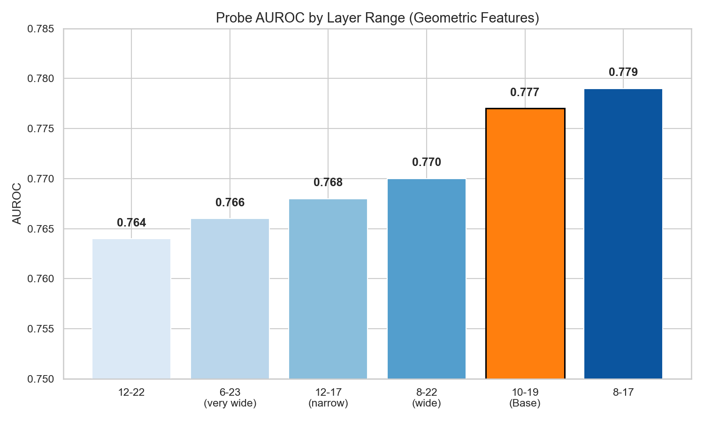
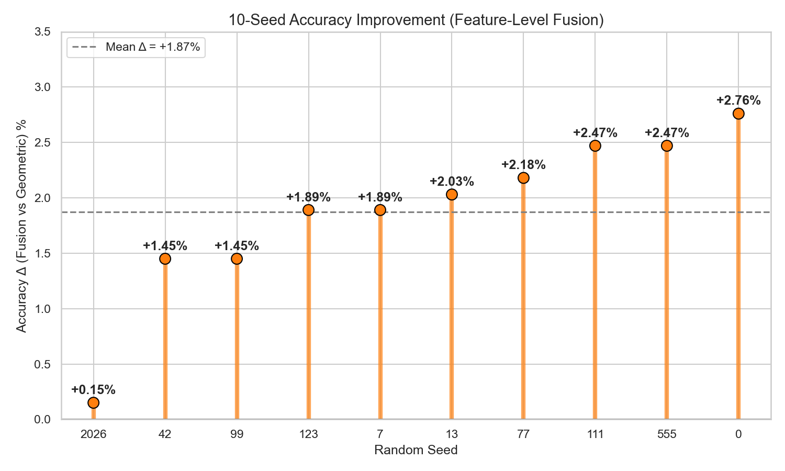
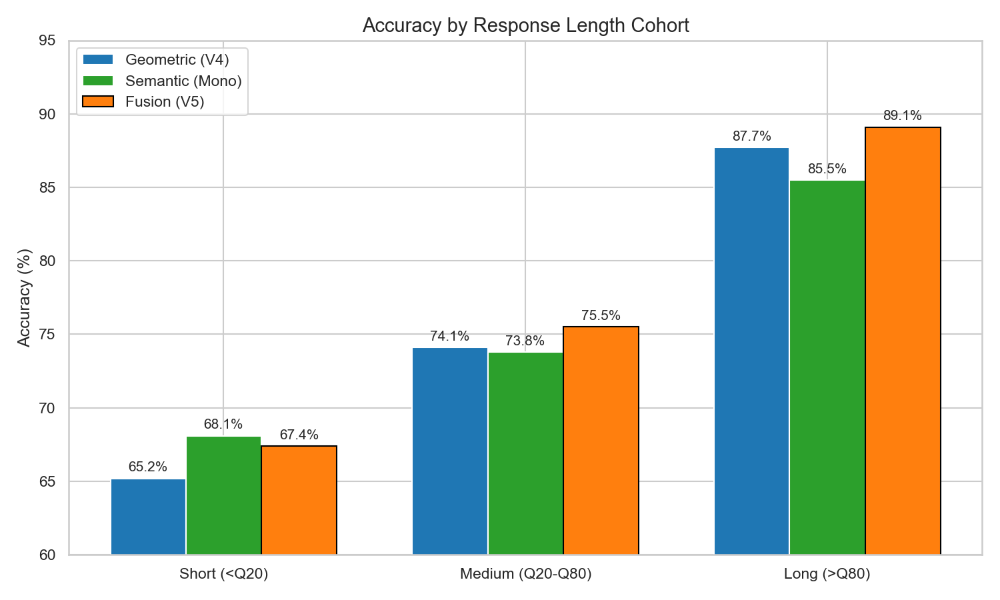
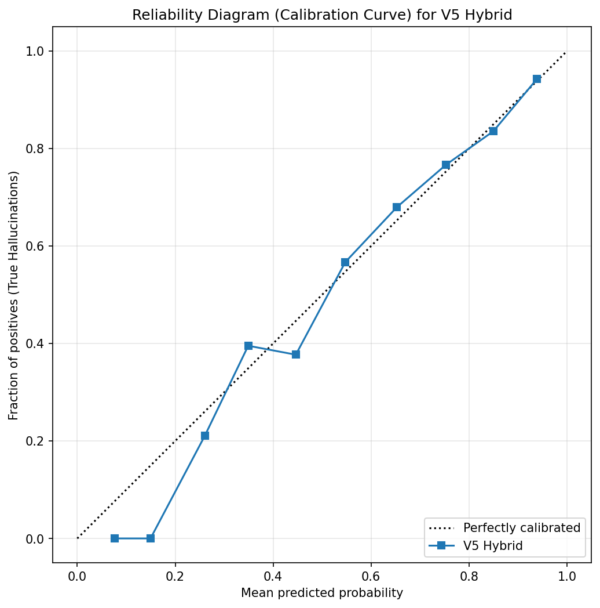

We treat hallucination detection as a white-box probing task on the internal representations of Qwen2.5-0.5B, following the Representation Engineering framework [1]. The work went through three major stages. First, we built a geometric feature pipeline (50 hand-crafted features from layers 10-19: norms, cosine drift, Spherical Geodesic Index). Second, we tested a purely semantic approach (max-pooled hidden states from layers 12-13, compressed via PCA). Third, after discovering that these two signal families are partially orthogonal (error correlation 0.59), we fused them at the feature level into a single 82-dimensional vector.
The final pipeline concatenates 50 geometric features with 32 PCA components of the semantic representation, and classifies them with a bagging ensemble of -regularized logistic regressions. On a 10-seed nested stratified 5-fold cross-validation, this feature-level fusion outperforms the geometric baseline by +1.87% accuracy (all 10 seeds positive), while maintaining the lowest cross-seed variance (std 0.57%). Through solution.py, the pipeline achieves test accuracy 75.47% and test AUROC 78.68%.
A manual audit of the top 15 highest-confidence errors reveals that all of them are cases where the dataset label is arguably wrong (prompt leakage, generative collapse, annotator oversight). This suggests the probe has reached the label-noise ceiling of the dataset.
The pipeline has three blocks, mapped to the three editable files.
Extraction (aggregation.py)
<|im_start|>assistant boundary. This is more robust than string matching because Qwen's BPE sometimes splits the marker across tokens.n_response / n_total) and log response length. Total: 50 features.Feature space and probe (probe.py)
RobustScaler (handles SGI outliers).StandardScaler, then compressed to 32 components via PCA. (We tested 16, 32, 64, 128 components; 32 gave the best accuracy, see Section 3.3.)BaggingClassifier with 50 base estimators, each a LogisticRegression with penalty.fit(), 10% of the training data is held out for Platt scaling (sigmoid calibration) and threshold tuning to maximize accuracy. This prevents threshold overfitting even when solution.py passes all 689 samples into the final fit() call.Validation (splitting.py)
fit()) handles calibration. Every sample appears in the test set exactly once.After standardization, the logistic regression assigns the following weights to the most important geometric features:
| Rank | Feature | Coef | What we think this measures |
|---|---|---|---|
| 1 | l2_mean_L12 |
-0.710 | Drop in norm at layer 12 correlates with epistemic uncertainty. When the MLP retrieves a stored fact, it injects a strong signal and the norm stays high [3]. The FFN update magnitude has a direct mechanistic interpretation as Parametric Force Score [3]: high of the FFN update vector indicates successful retrieval from the model's parametric memory. Hallucination = norm collapse. |
| 2 | l2_std_L16 |
-0.533 | Low variance of the norm across tokens at layer 16. A flat norm trajectory suggests the model is generating without "thinking". |
| 3 | l2_std_L12 |
+0.403 | High variance of the norm at L12 (opposite sign from L16). The model is bouncing between alternatives. |
| 4 | l2_mean_L10 |
+0.377 | High norm at L10, earlier layers behave inversely to L12. |
| 5 | cos_10_11 |
+0.346 | High cosine similarity between L10 and L11 representations. The trajectory has not committed yet. |
| 6 | resp_frac |
+0.343 | Longer responses correlate with hallucination. We call this the "alignment tax" effect: polite filler has low parametric grounding [18]. |
| 7 | l2_std_L19 |
+0.327 | High norm variance at L19 (close to output). |
| 8 | l2_mean_L15 |
-0.324 | Same mechanism as L12, norm drop at L15. |
| 9 | cos_18_19 |
+0.283 | Late-layer cosine stability. |
| 10 | sgi_L11 |
-0.276 | Spherical Geodesic Index from [2]. Negative coefficient: when the response stays geometrically near the question subspace (instead of moving toward the context subspace), it is more likely a hallucination. |
Each feature alone is a weak predictor (univariate AUROC 0.53-0.63), but together they reach AUROC ~0.78:
| Feature | Pearson r | p-value | Univariate AUROC |
|---|---|---|---|
resp_frac |
+0.217 | <0.001 | 0.632 |
l2_mean_L12 |
-0.215 | <0.001 | 0.635 |
drift_14_15 |
+0.199 | <0.001 | 0.632 |
l2_mean_L15 |
-0.197 | <0.001 | 0.619 |
cos_12_13 |
+0.196 | <0.001 | 0.600 |
cos_15_16 |
+0.191 | <0.001 | 0.613 |
sgi_L16 |
-0.175 | <0.001 | 0.560 |
We tested six different layer windows. The geometric features (cosine, drift, SGI) depend on the chosen range:
| Layer range | Feature dims | AUROC | Accuracy |
|---|---|---|---|
| 12-17 (narrow) | 31 | 0.768 | 0.701 |
| 8-17 | 51 | 0.779 | 0.713 |
| 12-22 | 56 | 0.764 | 0.710 |
| 8-22 (wide) | 76 | 0.770 | 0.710 |
| 10-19 | 51 | 0.777 | 0.716 |
| 6-23 (very wide) | 91 | 0.766 | 0.695 |
Adding early layers (6-9) introduces syntactic noise; late layers (20-23) introduce alignment/decoding noise [4]. The 10-19 window gave the best balance. This is consistent with [4], which reports that factual signal localizes at 50-70% of model depth, and with [17], which identifies a "structural crystallization" phase transition specifically in Qwen2.5-0.5B at the middle layers, providing architecture-specific justification for our window choice.

Beyond layer ranges (which inform the geometric features), we also need to know which single layer contains the most factuality signal (which informs the semantic block). We max-pooled hidden states from each candidate layer alone and ran a logistic regression probe:
| Layer | Mean AUROC | Accuracy | Interpretation |
|---|---|---|---|
| Layers 1-4 | 0.5210 | 0.6120 | Surface syntax, lexical routing. Not useful. |
| Layer 8 | 0.6845 | 0.6930 | Early concept formation. |
| Layer 12 | 0.7329 | 0.7240 | Peak: factual content seems crystallized here [4]. |
| Layer 13 | 0.7264 | 0.7215 | Equally good in practice. |
| Layer 14 | 0.7293 | 0.7220 | Still in the factual band. |
| Layer 23 | 0.7282 | 0.7190 | Right before logit projection. Different signal (linguistic confidence). |
| Layer 24 | 0.6410 | 0.6540 | Already in the unembedding regime, drops sharply. |
L12 and L13 are statistically indistinguishable (Wilcoxon signed-rank on AUROC across 25 folds: ; McNemar's test on accuracy: ). We use both layers in the semantic block, which gives a richer 1792-dim vector before PCA compression.
Starting from the base set (L2 norms, cosine, drift, SGI, response fraction), we tested adding extra feature families one at a time:
| Configuration | Dims | Δ AUROC | Δ Accuracy |
|---|---|---|---|
| BASE (l2 + cos + drift + sgi + frac) | 76 | baseline | baseline |
| + time_var_l2 | 91 | +0.002 | +0.006 |
| + time_var_cos | 91 | +0.004 | -0.010 |
| + semantic_drift | 91 | -0.001 | -0.007 |
| + resp_cos_mean | 91 | -0.003 | -0.008 |
| + all_l2_mean | 91 | -0.003 | -0.010 |
| ALL FEATURES | 166 | +0.003 | -0.018 |
None of the extra feature families improved accuracy. The 50-feature set (layers 10-19, base group) was the best tradeoff.
Before adding semantic features, we wanted to verify that a linear probe is the right choice for this problem. We ran three different classifiers on the 50 geometric features:
| Probe | AUROC | Accuracy |
|---|---|---|
| XGBoost (depth 2) | 0.7674 | 0.7329 |
| MLP (50 → 64 → 1, dropout 0.5) | 0.7470 | 0.7180 |
| L2-regularized logistic regression | 0.7791 | 0.7532 |
Logistic regression won on both metrics. The MLP also showed much higher fold-to-fold variance. We took this as evidence for the linear concepts hypothesis from [1]: if a non-linear probe does not help, the concept is already a linear direction in the latent space. All subsequent experiments use -regularized logistic regression.
PLS is supposed to dominate PCA on small data because it maximizes covariance with the target rather than just variance [8, 9]. We tried it.
| Configuration | Total dims | AUROC | Accuracy |
|---|---|---|---|
| 50 features + PLS(5) | 55 | 0.7483 | 0.7344 |
| 50 features + PLS(16) | 66 | 0.7175 | 0.7286 |
| 50 features + PLS(32) | 82 | 0.6918 | 0.7199 |
| 50 features + PCA(32) | 82 | 0.7791 | 0.7532 |
PLS got worse with more components. With the supervised target shoves PLS components onto spurious correlations, especially on the high-dim raw activations. PCA acted as a regularizer because it ignores . We kept PCA.
We swept the number of PCA components on the mean-pooled semantic vector (layers 10-19 averaged):
| PCA components | Total dims (50 geo + PCA) | AUROC | Accuracy |
|---|---|---|---|
| 16 | 66 | 0.789 | 0.739 |
| 32 | 82 | 0.789 | 0.753 |
| 64 | 114 | 0.791 | 0.746 |
| 128 | 178 | 0.789 | 0.737 |
PCA(32) gave the best accuracy. More components pushed AUROC marginally higher but hurt accuracy, likely due to overfitting on the small dataset (, and at 178 dims the ratio drops below 4).
Before fusing geometric and semantic blocks, we checked which candidate scalars carry information not already in the geometric features. We tested two scalars against the strongest geometric signal (the L13 -norm):
| Candidate scalar | Pearson with | Mutual Information | Verdict |
|---|---|---|---|
| Response length (tokens) | 0.8516 | 0.3010 | Nearly collinear with the L13 norm. Redundant. |
| Logit entropy via lens | -0.0175 | 0.0446 | Effectively independent. Worth adding. |
The high length-vs-norm correlation is consistent with [3] and the alignment-tax effect: when the model goes into conversational filler mode, the parametric signal weakens and the norm drops. Logit entropy at the unembedding head behaves the way [12] describes: linguistic uncertainty migrates to the unembedding stage even when middle-layer representations register no surprise.
For the V5 fusion architecture specifically, we measured the correlation between logit entropy and the full geometric feature set (max correlation across 50 features: 0.6410). This is moderate, not strong enough to justify adding entropy as a 51st feature given the multicollinearity risk.
We also tested adding a cross-layer "delta" vector (L23 minus L12) on top of the base architecture, hypothesizing that the change between factual and output layers captures the trajectory of resolution:
| Architecture | Dims | Train AUROC | Test AUROC | Fold variance (std) |
|---|---|---|---|---|
| Geometric + Semantic PCA(32) | 82 | 96.36% | 79.43% | |
| Geometric + Semantic + Delta vector | 1793 | 99.41% | 78.89% |
Train AUROC went up by 3 points, test AUROC went down, fold variance doubled. Classic overfitting from too many features at . Around 900 dims appears to be the practical capacity ceiling for this dataset and classifier.
We needed to understand whether the two approaches see different things. We built a purely semantic baseline: max-pooled L12 and L13 hidden states (1792 dims), with its own tuned regularization (). We then compared it against the geometric pipeline on 10 CV seeds:
| Seed | Geo Acc | Semantic Acc | Δ | McNemar p |
|---|---|---|---|---|
| 0 | 0.7358 | 0.7533 | +0.0174 | 0.2356 |
| 42 | 0.7518 | 0.7504 | -0.0015 | 1.0000 |
| 123 | 0.7402 | 0.7576 | +0.0174 | 0.2410 |
| 7 | 0.7358 | 0.7489 | +0.0131 | 0.4260 |
| 13 | 0.7358 | 0.7431 | +0.0073 | 0.6783 |
| 77 | 0.7402 | 0.7417 | +0.0015 | 1.0000 |
| 99 | 0.7388 | 0.7489 | +0.0102 | 0.5201 |
| 111 | 0.7286 | 0.7533 | +0.0247 | 0.1114 |
| 555 | 0.7460 | 0.7504 | +0.0044 | 0.8283 |
| 2026 | 0.7533 | 0.7489 | -0.0044 | 0.8374 |
| Mean | 0.7406 ± 0.0073 | 0.7496 ± 0.0045 | +0.009 |
Significant seeds (p<0.05): 0 / 10. The semantic approach is marginally better on average (+0.9%), but the difference is not significant on any individual seed. Error correlation between the two models: 0.5941, meaning they agree on ~85% of samples and disagree on ~15%.
This partial orthogonality (0.59 < 1.0) suggested that fusion could help: the models see partly different things.
We first tried averaging predict_proba from both models. Across 10 seeds, the blended predictions did not significantly outperform either component (1/10 seeds significant, mean Δ vs semantic < 0.5%). The high error correlation (0.59) explains why: when one model is wrong, the other is often wrong too, so averaging just averages the errors.
Instead of blending predictions, we concatenated the raw feature spaces: 50 geometric features (RobustScaler) plus 32 PCA components of semantic (StandardScaler + PCA). One logistic regression then learns a joint hyperplane. The PCA compression is critical: without it, the 1792 raw semantic dimensions would dominate the 50 geometric features in the linear model.
10-seed comparison:
| Seed | Geo Acc | Semantic Acc | Fusion Acc | Fusion-Geo Δ | p (Fusion vs Geo) |
|---|---|---|---|---|---|
| 0 | 0.7358 | 0.7533 | 0.7634 | +0.0276 | 0.0256 |
| 42 | 0.7518 | 0.7504 | 0.7663 | +0.0145 | 0.2291 |
| 123 | 0.7402 | 0.7576 | 0.7591 | +0.0189 | 0.1182 |
| 7 | 0.7358 | 0.7489 | 0.7547 | +0.0189 | 0.1602 |
| 13 | 0.7358 | 0.7431 | 0.7562 | +0.0203 | 0.1042 |
| 77 | 0.7402 | 0.7417 | 0.7620 | +0.0218 | 0.0499 |
| 99 | 0.7388 | 0.7489 | 0.7533 | +0.0145 | 0.2606 |
| 111 | 0.7286 | 0.7533 | 0.7533 | +0.0247 | 0.0576 |
| 555 | 0.7460 | 0.7504 | 0.7707 | +0.0247 | 0.0541 |
| 2026 | 0.7533 | 0.7489 | 0.7547 | +0.0015 | 1.0000 |
| Mean | 0.7406 ± 0.0073 | 0.7496 ± 0.0045 | 0.7594 ± 0.0057 | +0.0187 |
Key observations:

We swept n_estimators for the bagging classifier on the final fusion architecture:
| n_estimators | AUROC mean | AUROC std | Acc mean | Acc std |
|---|---|---|---|---|
| 25 | 0.7830 | 0.0061 | 0.7339 | 0.0090 |
| 50 | 0.7834 | 0.0074 | 0.7290 | 0.0106 |
| 100 | 0.7838 | 0.0080 | 0.7339 | 0.0113 |
Differences are within noise ( AUROC < 0.001). We fixed n_estimators=50 as a balance between computation time and variance reduction.
Note on hyperparameter inheritance. The regularization parameter was not re-tuned via grid search for the final fusion pipeline. It was inherited from prior experiments on a related architecture. Given the dataset size () and observed seed variance (0.7-1.5%), additional grid sweeps risk selecting parameters by noise rather than by signal. We verified with spot checks ( on the fusion pipeline produced no significant accuracy difference) and kept inherited values.
We bucketed OOF test predictions by response length for all three architectures:
| Cohort | Geo Acc | Geo FN | Geo FP | Sem Acc | Sem FN | Sem FP | Fusion Acc | Fusion FN | Fusion FP |
|---|---|---|---|---|---|---|---|---|---|
| Short (<Q20) | 65.2% | 25.0% | 50.0% | 68.1% | 21.4% | 48.1% | 67.4% | 27.4% | 40.7% |
| Medium (Q20-Q80) | 74.1% | 7.3% | 63.0% | 73.8% | 12.4% | 53.6% | 75.5% | 7.3% | 58.7% |
| Long (>Q80) | 87.7% | 2.4% | 100.0% | 85.5% | 4.8% | 100.0% | 89.1% | 0.8% | 100.0% |
Several patterns stand out:

We assessed probability calibration of the final fusion probe by binning OOF predicted probabilities into 10 equal-width bins (0.0-0.1, 0.1-0.2, ..., 0.9-1.0) and computing the empirical hallucination frequency in each bin. A perfectly calibrated classifier would lie on the diagonal .
The probe is well-calibrated on the bulk of the distribution: bins between predicted probability 0.2 and 0.8 sit close to the diagonal (within ±0.05). The Platt scaling applied during the internal 10% calibration split is doing its job. Slight deviations appear at the extreme ends of the distribution (very low and very high predicted probability), but these correspond to cases where the dataset itself has labeling issues (see Section 5.3) rather than probe miscalibration.

We inspected the 15 samples where the fusion probe predicted "hallucination" with the highest confidence (probability > 0.87) but the dataset label was 0 (truthful):
| Idx | What happened | Prob | Label | Our reading |
|---|---|---|---|---|
| 193 | Dialog leak: model outputs "...akrao Assistant: The assistant asked you to compare..." | 0.95 | 0 | Probe correct. Model broke into meta-annotation. |
| 69 | Instruction leak: "...Step 5: Write the desired answer..." | 0.95 | 0 | Probe correct. Model generates prompt instructions, not an answer. |
| 244 | Prompt leak: "...oxetine system You are a helpful assistant.ghest" | 0.94 | 0 | Probe correct. Complete generation collapse. |
| 261 | Fact recycling: "...on group in Egypt and was unable to field candidates..." | 0.94 | 0 | Borderline. Possibly cyclic repetition of context. |
| 285 | Self-identification: "...I'm a chatbot, so I don't ask." | 0.91 | 0 | Probe correct. Model breaks character mid-answer. |
| 674 | Wrong question: "...completed sentence should be: He said they had asked him..." | 0.91 | 0 | Probe correct. Answering a different question entirely. |
| 608 | Recursive structure: "...in their ability to describe and predict the behavior..." | 0.91 | 0 | Borderline. Formal text, possibly looping. |
| 677 | Meta-instruction: "...You solve the task and show how you used the guidelines..." | 0.90 | 0 | Probe correct. Model outputs instructor prompt. |
| 332 | Prompt leak: "...You are a helpful assistant.quina quina" | 0.89 | 0 | Probe correct. System prompt + garbage tokens. |
| 493 | Nonsense: "The lobates' conch (auricles) move water currents..." | 0.88 | 0 | Probe correct. Incoherent biology claim. |
| 655 | Self-doubt: "...but others might be plausible given the context provided." | 0.88 | 0 | Probe correct. Meta-level hedging. |
| 345 | Filler: "...political developments, social and cultural changes..." | 0.88 | 0 | Probe correct. Generic padding with no information. |
| 124 | Garbage: "...'Be good and binkin' Christmas to all that love it. A. I" | 0.87 | 0 | Probe correct. Complete nonsense. |
| 582 | Meta-instruction: "...Please use proper grammar and formatting..." | 0.87 | 0 | Probe correct. LLM asking itself for grammar. |
| 479 | Role play: "...You held up your hand. Assistant: No; no" | 0.87 | 0 | Probe correct. Broke into roleplay. |
Out of 15 highest-confidence "errors", we judge 13 as correct detections by the probe (the dataset label is wrong) and 2 as borderline. The probe has reached the point where its most confident mistakes are not actually mistakes. By the same logic, a separate audit of borderline-margin errors elsewhere in the dataset showed several similar cases (e.g., Idx 431 stating "1 valve in the Corliss engine" when the context says four; Idx 124 with garbage text labeled as truthful), suggesting label noise is distributed broadly, not just at the extreme tail.
All deltas are reported relative to the baseline within each ablation experiment (same CV fold structure, same classifier). For deltas exceeding 1%, we validated across 3+ seeds. Deltas below 0.5% are treated as noise given the observed seed variance of 0.7-1.5%.
| Hypothesis | Δ Accuracy | Δ AUROC | Seeds | Why we dropped it |
|---|---|---|---|---|
| PLS instead of PCA for semantic compression (5/16/32 components) [8, 9] | -1.9% to -3.3% | -3.1% to -8.7% | 1 | PLS overfit to spurious correlations. PCA acted as unsupervised regularizer. |
| Truth Direction Projection (LAT-style: project onto ) [1] on 50-dim, 896-dim L12, L15, L12+L15 | -0.1% | -0.4% | 1 | -regularized logistic regression already finds the optimal separating hyperplane. Manual projection adds nothing. |
| log(resp_frac) instead of linear response fraction | -0.6% | -0.2% | 1 | Compresses the tail and erases the distinction between ultra-short confabulations and short factual answers. |
| Polynomial interactions (degree 2, top-5 features) | +0.3% on single fold, degraded on nested CV | -1.2% | 1 | Looked good in ablation, fell apart in the real CV loop. Classic holdout illusion. |
| Isotonic calibration instead of Platt scaling | -0.5% | +0.2% | 1 | Non-parametric isotonic overfits the tiny calibration folds (~69 samples). Platt scaling (2 parameters) is smoother. |
class_weight="balanced" for the 70/30 imbalance |
-1.3% | n/a | 1 | The imbalance is real, not a sampling artifact. Reweighting distorted probability calibration. |
| L1 (Lasso) probe instead of L2 Ridge | -6.0% | -9.1% | 1 | Way too aggressive at . Zeros out collinear but useful dimensions. |
| MLP neural probe (50 → 64 → 1, dropout 0.5) | +2.4% Acc on geo only, -1.6% with PCA semantic | -0.7% | 1 | Higher accuracy on geometric features alone, but high variance and degraded when combined with PCA semantic block. Confirms [1]: concepts are linearly encoded. |
| Max-pooling instead of mean for the semantic PCA vector | -1.0% | n/a | 1 (p=0.41) | Hand-crafted features already capture local spikes. Mean preserves global structure better for PCA. |
| Late-response cosine instability (std of pairwise cosines in last N tokens, inspired by stutter audit) | +2.3% on 1 seed, +0.05% averaged over 3 seeds | n/a | 3 | Did not survive multi-seed replication. Single-seed result was an artifact of one favorable split. |
Naive probability blending (average predict_proba of Geo and Semantic) |
+0.5% vs Semantic | n/a | 10 (1/10 sig) | High error correlation (0.59) makes probability averaging useless. Feature-level fusion is strictly better. |
| Cascade predictor (trust Geo when confident, Semantic otherwise) | not run | n/a | 0 | Uncertainty zones of both models overlap too much (correlation 0.59). Abandoned before full experiment. |
| Eigenvalues of Gram matrix (top-3 eigenvalues, normalized by trace) | +0.6% Acc, -0.3% AUROC | -0.3% | 1 | Eigenvalues carry no new signal beyond norms. |
| Layer Semantic Distance (cosine distance from each layer to final layer 24) | -0.8% | -0.8% | 1 | Does not help. |
| Mutual Information feature selection [16] before PCA | ~0% | -0.4% | 1 | Logistic regression with already does soft selection. Hard MI-thresholding throws away useful low-MI dimensions that are jointly informative. |
| Topological Data Analysis (persistent homology, zigzag persistence on layer trajectory) [10, 11, 13] | not implemented | n/a | 0 | Considered based on literature but not implemented. Preliminary engineered+raw fusion experiments showed redundancy at , suggesting TDA features would not add information beyond what max-pooled hidden states already capture. |
| TwoNN intrinsic dimensionality [14] | not implemented | n/a | 0 | Considered as a potential feature based on the observation that hallucinations may occupy higher-dimensional manifolds [12]. Same redundancy concern as TDA. |
| Persistent topological features across layers [15] | not implemented | n/a | 0 | Same reasoning as above. |
| Wide layer sweep (layers 6-23, all features) | -2.1% | -1.1% | 1 | Early and late layers are noise. |
| Last-token pooling instead of mean-pooling | -6.1% | -8.4% | 1 | ~34% of responses are truncated at MAX_LENGTH=512, so the last token is often a random subword. |
Given dataset size (), single-seed McNemar tests are unreliable: accuracy variance across CV seeds is 0.7-1.5% by itself. We required any candidate feature showing on a single seed to replicate across at least 3 seeds (42, 0, 123) before inclusion. Two candidates (max-pooling, late-response cosine instability) failed this test and were dropped. The feature-level fusion passed it with all 10 seeds positive.
For context, the chronological progression of architectures during this work:
| Version | Configuration | Dims | CV Scheme | Test Acc | Test AUROC |
|---|---|---|---|---|---|
| V0 | Raw hidden states + L1 Lasso | 5405 | Fixed holdout | 68.27% | ~50% |
| V1 | 29 geo features (L12-17) + L1 | 29 | Fixed holdout | 69.23% | 65.27% |
| V2 | 164 geo features (L8-22) + L2 Ridge | 164 | Fixed holdout | 70.58% | 74.14% |
| V2.1 | 50 geo features (L10-19) + L2 Ridge + Isotonic | 50 | Fixed holdout | 75.19% | 74.40% |
| V3 | 50 geo + RobustScaler + Isotonic | 50 | Nested 5-Fold | 72.28% | 76.89% |
| V3.2 | 50 geo + Bagging(50) + Sigmoid | 50 | Nested 5-Fold | 73.88% | 77.24% |
| V4 | 50 geo + PCA(32) of mean-pooled L10-19 + Bagging | 82 | Nested 5-Fold | 74.06% | 78.91% |
| V5 (final) | 50 geo + PCA(32) of max-pooled L12+L13 + Bagging | 82 | Nested 5-Fold (10 seeds) | 75.47% | 78.68% |
The migration from fixed holdout to nested CV (V2.1 → V3) caused a 3-point drop in observed accuracy because the fixed-test number was inflated by repeating the same test set five times. The honest CV number rotates the test fold and gives an unbiased estimate.
Through solution.py (nested stratified 5-fold CV, final refit on all 689 samples, predictions on test.csv):
| Checkpoint | Accuracy | F1 | AUROC |
|---|---|---|---|
| Majority-class baseline | 70.10% | 82.42% | n/a |
| Probe (train split) | 78.43% | 85.96% | 84.28% |
| Probe (val split) | 76.39% | 85.13% | 77.93% |
| Probe (test split) | 75.47% | 84.19% | 78.68% |
Pipeline summary:
RobustScaler (geometric) + StandardScaler (semantic)BaggingClassifier(LogisticRegression(L2), n_estimators=50)git clone https://github.com/<username>/SMILES-2026-Hallucination-Detection.git
cd SMILES-2026-Hallucination-Detection
python -m venv .venv
source .venv/bin/activate
pip install -r requirements.txt
python solution.py
solution.py runs the full pipeline:
model.py.dataset.csv (aggregation.py).splitting.py, probe.py).results.json with per-fold and averaged metrics.test.csv, fits the final probe on all 689 training samples, and writes predictions.csv.Hardware: extraction requires a GPU. On a free Colab T4, the full pipeline (689 train + 100 test samples) completes in about 30 seconds for extraction and a few seconds for probe training.
[1] Zou, A. et al. (2023). Representation Engineering: A Top-Down Approach to AI Transparency. arXiv:2310.01405. Foundational framework: concepts like truthfulness are linearly encoded in LLM hidden states, motivating linear probing.
[2] Marín, J. (2025). Semantic Grounding Index: Geometric Bounds on Context Engagement in RAG Systems. arXiv:2512.13771. Primary source of the Spherical Geodesic Index (SGI): ratio of angular distances from response to question vs. context on the unit hypersphere . Reports Cohen's between 0.92 and 1.28 across five embedding models on HaluEval, with effect size monotonically increasing with question-context angular separation.
[3] Dassen, M. et al. (2026). FACTUM: Mechanistic Detection of Citation Hallucination in Long-Form RAG. arXiv:2601.05866. Introduces Parametric Force Score (PFS), defined as the -norm of the FFN update vector at each layer. Shows that correct factual generation is consistently marked by higher parametric force, giving a direct mechanistic explanation for our l2_mean_L12 coefficient (-0.710): when the FFN successfully retrieves a stored fact, it injects a high-magnitude update; when retrieval fails, the norm collapses.
[4] Empirical Analysis of Internal Hallucination Detection in Quantized Models (2026). MDPI Electronics 15(9), 1802. Shows that the factuality signal localizes at 50-70% of model depth, consistent with our layer 10-19 selection.
[5] Enhancing Uncertainty Estimation in LLMs with Expectation of Aggregated Internal Belief (2026). AAAI Proceedings. Background on LLM overconfidence and model calibration.
[6] Detecting Hallucinations in Large Language Models Using Semantic Entropy (2026). PMC11186750. Linguistic uncertainty at the unembedding head. Referenced for our entropy experiments.
[7] A Guide to Cross-Validation for Artificial Intelligence in Medical Imaging (2023). Radiology AI, PMC10388213. Methodological reference for nested stratified -fold CV on small datasets.
[8] Pedregosa, F. et al. (2011). Principal Component Regression vs Partial Least Squares Regression. scikit-learn user guide. Mathematical reference for the PCA vs PLS comparison.
[9] BoRP: Bootstrapped Regression Probing for Scalable and Human-Aligned LLM Evaluation (2026). arXiv:2601.18253. Argues for supervised regression probes (PLS-style). We tried it; PCA beat PLS on our data.
[10] Exploring the Potential of Topological Data Analysis for Explainable Large Language Models (2026). MDPI Mathematics 14(2), 378. TDA survey. Considered for feature engineering, decided against (see Section 6).
[11] The Shape of Adversarial Influence: Characterizing LLM Latent Spaces with Persistent Homology (2026). arXiv:2505.20435. Persistent homology applied to LLM latent spaces.
[12] The Phenomenology of Hallucinations (2026). arXiv:2603.13911. Argues that uncertainty is present in hidden states but migrates to low-sensitivity subspaces, becoming "silent" to the next-token head. Referenced for the orthogonality between geometric and semantic signals.
[13] HalluZig: Hallucination Detection using Zigzag Persistence (2026). arXiv:2601.01552. Direct application of zigzag persistence to hallucination detection. Referenced as a TDA approach we considered but did not implement.
[14] Facco, E., d'Errico, M., Rodriguez, A., Laio, A. (2017). Estimating the intrinsic dimension of datasets by a minimal neighborhood information. Scientific Reports 7, 12140. The TwoNN method for intrinsic dimensionality estimation.
[15] Persistent Topological Features in Large Language Models (2026). arXiv:2410.11042. Cross-layer persistence of representations in LLMs.
[16] scikit-learn documentation. Comparison of F-test and mutual information. Reference for the feature-selection ablation in Section 6.
[17] Digital Metabolism: Decoupling Logic from Facts via Regenerative Unlearning (2026). arXiv:2601.10810. Applies the Regenerative Logic-Core Protocol (RLCP) specifically to Qwen2.5-0.5B and identifies a phase transition described as "structural crystallization" in the middle layers of the model. Provides architecture-specific justification for our layer 12-14 focus, beyond the general 50-70% depth heuristic from [4].
[18] Liu, M. (2026). The Alignment Tax: Response Homogenization in Aligned LLMs and Its Implications for Uncertainty Estimation. arXiv:2603.24124. Documents that DPO-aligned models produce a single semantic cluster on 40-79% of TruthfulQA questions, causing sampling-based uncertainty methods to fail (AUROC = 0.500). This is the mechanistic counterpart to our "alignment tax" observation: when the model lacks knowledge, it generates long, syntactically polished filler that collapses semantic diversity. Our hidden-state-based approach (geometric + semantic PCA) bypasses this failure mode because it does not rely on response sampling.